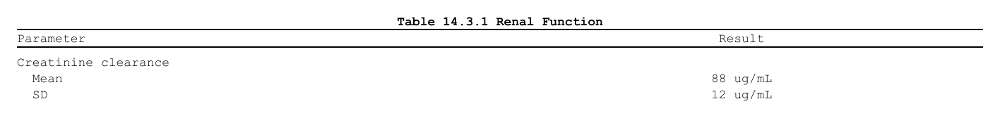

Once a document is built, three steps turn it into a deliverable:
render it to an .rtf, optionally
post-process the file, and – for a multi-table package
– assemble several RTFs into one with a table of
contents.
Show code
df <- data.frame(
Parameter = c("Creatinine clearance", " Mean", " SD"),
Result = c("", "88 ug/mL", "12 ug/mL"),
stringsAsFactors = FALSE
)
doc <- rtf_document() |>
rtf_tables(as_rtftables(df), titles = list(c("Table 14.3.1 Renal Function")))
Rendering – generate_rtfreport()
generate_rtfreport() writes the document to a file you
can open in Word or LibreOffice. Use overwrite = TRUE to
replace an existing file.
out <- tempfile(fileext = ".rtf")
generate_rtfreport(doc, out, overwrite = TRUE)
file.exists(out)
#> [1] TRUEThe file can also be said where the document is made, with the
program: rtf_document(file = ) keeps it in the document,
and generate_rtfreport(doc) writes there. A
file_path given to generate_rtfreport() wins,
so the same document can still be written somewhere else for a
check.
Show code
out2 <- tempfile(fileext = ".rtf")
doc2 <- rtf_document(file = out2) |>
rtf_tables(as_rtftables(df), titles = list(c("Table 14.3.1 Renal Function")))
generate_rtfreport(doc2)
file.exists(out2)#> [1] TRUEPost-processing – rtf_replace_text()
Sometimes the rendered file needs a small tweak that you do not want
to push back into the (validated) source data.
rtf_replace_text() does a find/replace directly on the
generated .rtf.
A typical case is units: the analysis dataset
carries an ASCII-safe token like ug/mL, but the report
should display µg/mL. Rather than putting a non-ASCII
character in the data, render with the ASCII token and swap it in the
finished file. The replacement is the RTF unicode escape for
µ (U+00B5 = 181), i.e. \u181?:
Show code
final <- tempfile(fileext = ".rtf")
rtf_replace_text(out, "ug/mL", "\\u181?g/mL", output_file = final)
rtf <- paste(readLines(final, warn = FALSE), collapse = "\n")
grepl("\\u181?g/mL", rtf, fixed = TRUE) # Word/LibreOffice show "µg/mL"#> [1] TRUEThe same approach swaps any ASCII placeholder for a symbol you cannot
(or prefer not to) carry in the source data.
rtf_replace_text() also supports vectorised targets, fixed
or regex matching (use_regex = TRUE), case-insensitive
matching, in-place editing (with an automatic .bak) or
writing to a separate output_file. See
?rtf_replace_text.
Note: rtfreporter already escapes non-ASCII characters you put in the data (so
"µg/mL"in a cell renders correctly too). Post-processing is the tool for the “last mile” – when the source must stay ASCII, or for a one-off fix to a finished file.
Assembling several RTFs – assemble_rtf()
Many outputs become one deliverable – a cover page, a table of
contents whose entries are links, and a bookmark per output – with
assemble_rtf(): see Assembling
reports into one document.
That completes the workflow for one output: build a document, render
it, and post-process it if needed. See ?generate_rtfreport,
?rtf_replace_text, and ?assemble_rtf for full
references.
Where next
- Assembling reports into one document — many outputs, one deliverable
- The pharmaverse catalog — complete worked deliverables
The four recipes (?rtfreporter-recipes) are the same
ground covered as runnable help-page examples: demographics, adverse
events, PK and laboratory, each data-in to RTF-out.